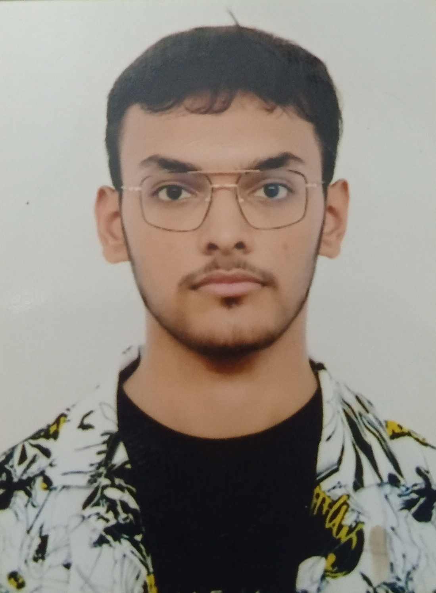

Kanishq Yadav

Summary
I am a Software Developer with a decent amount of knowledge in IT sector.
Education
- Preschool : Candy hills
- School : Puranchandra Vidyaniketan
- Graduation : TBD
Work Experience
- TBD
- Filler 2
- Filler 3
- Filler 4
Skills
Soft Skills:
- Good Listener
- Very co-operative
- Fast learner
- Competitive
Hard Skills: